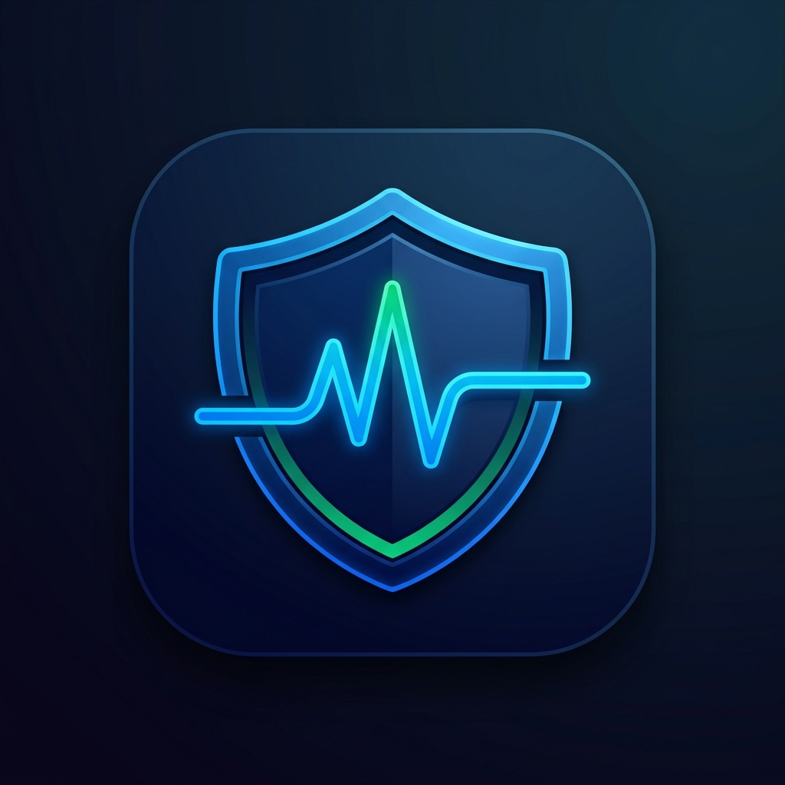

lifecycle_guard
by Crealify
Background tasks survive. Always.
9:41
iPhone 15 Pro
MyApp
Start Background Sync
Syncing...
flutter -- iOS (iPhone 15 Pro)
$
flutter run
[OK] App installed on iPhone 15 Pro
[INFO] User ready to test...
Without lifecycle_guard